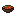

모닥불과 냄비
모닥불과 냄비
냄비는 모닥불에서 새로운 종류의 음식을 조리하고 다른 유용한 아이템들을 제작하게 해 주는 장치입니다.
냄비를 사용하려면 모닥불 위에 도자기 냄비를 올려놓아야 합니다.
멀티블록
냄비를 올려놓은 모닥불.


도자기 냄비는 먼저 점토로 형태를 만들어야 합니다.


연노랑****
모닥불과 사용할 수 있는 도자기 냄비를 만들기 위해서는 먼저 구워야 합니다.
모닥불과 비슷하게, 냄비에는 맨 위쪽부터 넣는 4개의 연료 슬롯과 온도 게이지가 있습니다. 냄비는 또한 5개의 아이템과 아무 액체 1000mB를 포함할 수 있습니다.
냄비를 사용하기 위해서는 먼저 통이나 양동이 등으로 냄비 속에 액체를 넣어야 합니다. 그 후에 아이템을 넣고 냄비를 사용할 수 있습니다. 냄비는 제작이 완료될 때까지 계속 끓습니다.

끓으면서 수프를 만드는 중인 냄비의 인터페이스.

수프 제작법
Soup is made from 3-5 fruits, vegetables, or meats in a pot of water. When the recipe is done, the water in the pot will turn red. 오른쪽 버튼 with a bowl to retrieve it. Soup combines multiple nutrients into a number of output meals depending on how much food is added. They are cheaper, but not as nutrition-dense as other meals.
간단한 제작법
아이템: tfc:bucket/red_dye
다른 냄비 제작법들은 아이템과 액체를 다른 무언가로 바꿉니다. 예를 들면, 5개의 재를 물에서 끓이면 잿물이 됩니다.